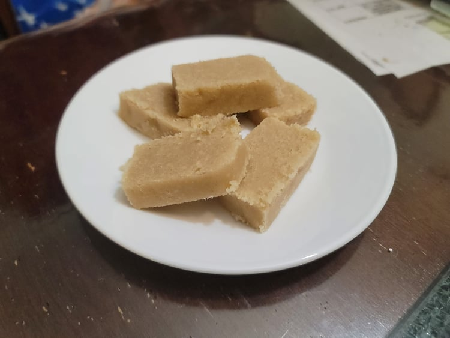

Halva

Ingredients:
- 1 1/2 cup Tahini
- 1 tsp Vanilla extract
- 1/4 tsp Salt
- 1 1/2 cup Sugar
- 1/2 cup Water
- Optional: 1/4 cup Chopped nuts of choice
Instructions:
- Prepare a loaf pan by greasing it and lining it with parchment paper.
- Combine the tahini, vanilla extract, and salt into a large bowl. Mix until homogenous.
- Combine the sugar and water into a pot with a candy thermometer. Heat over medium heat until the thermometer reads exactly 250 degrees Fahrenheit. The immediately remove from heat and pour into the bowl with the tahini.
- Mix the tahini and the sugar syrup until homogenous, but make sure to avoid over mixing. When the mixture is easily separating from the sides of the bowl, that is a sign that it is starting to become overmixed. Transfer the mixture to the prepped loaf pan and allow to cool to room temperature.
- Once at room temperature, the halva should have hardened into a fudge like consistency. Remove from the loaf pan and slice into servable pieces.